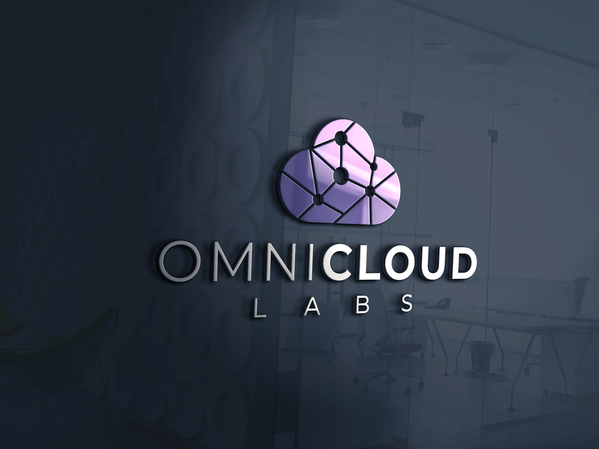

01
Cloud and platform engineering
Stand up the foundations behind fast-moving products: service architecture, CI/CD, cloud environments, observability, identity boundaries, and infrastructure that your team can actually operate.
Technical partner for cloud and AI startups
OmniCloud Labs
We work with startup teams that need senior hands on help across platform architecture, AI application development, product integrations, and the delivery systems required to ship fast without creating operational chaos.
Capabilities
OmniCloud Labs fits best where product and infrastructure are moving at the same time: early teams, internal platform efforts, new AI bets, and core systems that cannot afford vague handoffs.
01
Stand up the foundations behind fast-moving products: service architecture, CI/CD, cloud environments, observability, identity boundaries, and infrastructure that your team can actually operate.
02
Build copilots, agent workflows, retrieval-backed applications, and internal tools that connect models to product logic, private data, and the operational systems your users depend on.
03
Close the gap between roadmap and release with technical leadership, scoped implementation, and product delivery habits that keep momentum high as the team grows.
Engagement model
The goal is not to leave you with a prototype and a recommendation deck. The goal is to leave you with working software, stronger engineering patterns, and a product team that can keep shipping after the engagement ends.

Assess
Review the stack, product surface, and model strategy to identify what is slowing delivery or limiting scale.
Build
Implement services, application code, model orchestration, integrations, and the guardrails required for production use.
Scale
Hand off with deployment workflows, observability, cost awareness, and a clearer path for the next product milestone.
Work with us
We partner best with startup founders, product engineers, and technical leaders who are moving quickly and need help making platform choices, shipping AI features, or turning a fragile workflow into durable product infrastructure.